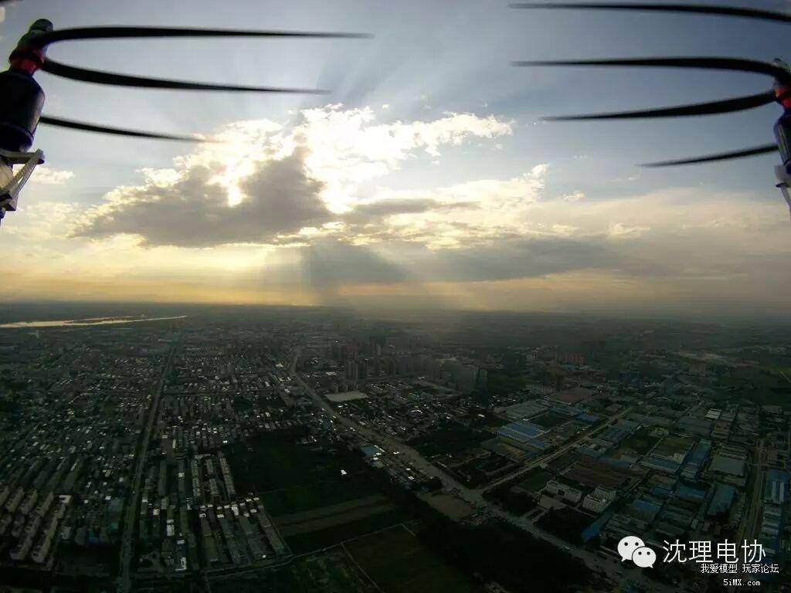
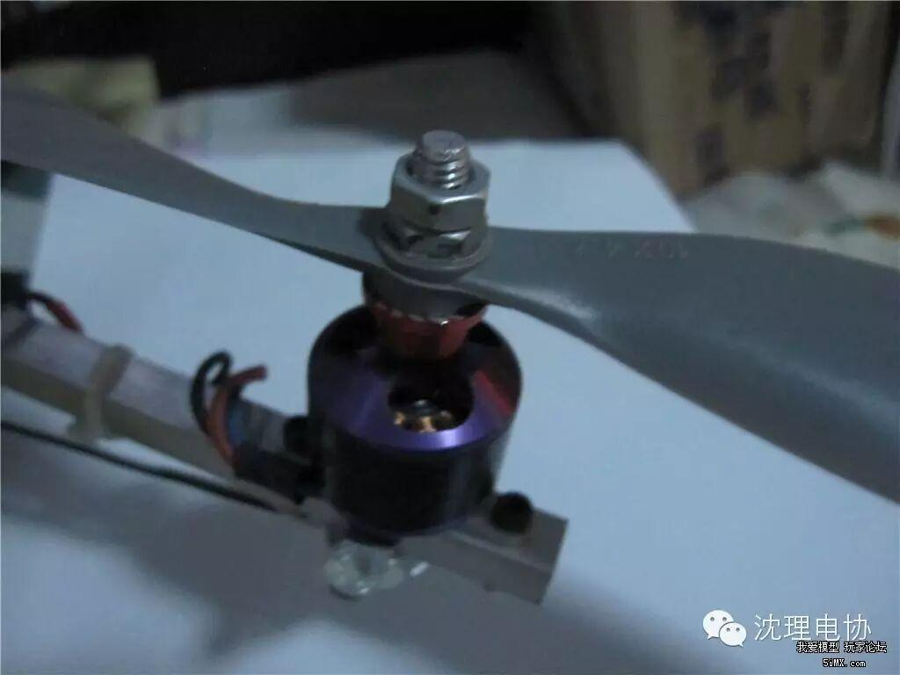
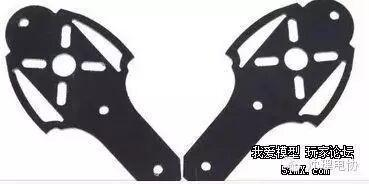
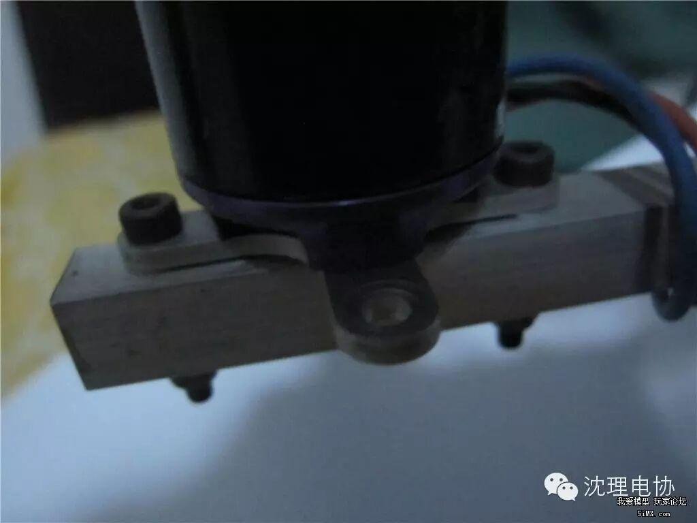

教你从零开始做四轴
点击上方蓝字“沈理电协"关注我们！

1.如果你想享受飞行的乐趣，不想被装机，修机折磨，并且又有一定的经济条件的话，那么大疆无人机是你不二的选择。如果你想体验飞行和动手的双重乐趣，或者RMB是个问题，那么自己动手吧！
2.制作四轴是需要耐心和兴趣的工作，如果没有这些可以及早放弃！
（1） 理论基础
首先，你得明白你要做的东西—四轴飞行器的工作原理。四轴飞行器大致由以下几个部分构成（推荐大家到百度百科搜一下更详细的解释）
① 机架：飞机的骨架，载有各种设备
② 飞控：飞机的大脑，载有加速度计、陀螺仪、气压计、罗盘等传感器。由它来控制四个电机的转速进而控制飞机的姿态。或是加上GPS完成定高定点返航等功能。其本质是单片机。常见的飞控有 xaircraft的superX、DJI的NAZA WKM A2、零度的X4 双子星、APM、MWC、QQ飞控、CC3D等
③ 电调：全称电子调速器,它的输入是直流，通常由2-6节锂电池来供电。输出是三相交流，可以直接驱动电机。另外航模无刷电子调速器还有三根信号输出线，用于接接收机。信号线可以引出稳定的5V电压，一般可以带2-4个舵机供电。航空模型就是通过遥控对航模无刷电子调速器的控制以达到调整飞机的各种飞行姿势和动作。
④ 无刷电机：通过三相交流电产生一个旋转磁场驱动转子转动。有宽调速、小体积、高效率和稳态转速误差小等特点。无刷电机KV值定义为 转速/V，意思为输入电压增加1伏特，无刷电机空转转速增加的转速值。但对于无刷电机来说不只是说明电机转速与电压成严格的线性比例关系，详见百度百科
⑤ 遥控、接收：顾名思义
Q：什么是美国手、日本手？
A：遥控器上油门的位置在右边是日本手、在左边是美国手。个人推荐美国手，左手控制油门和转向，右手控制副翼和俯仰，比较符合认知规律
Q：几通道是什么？
A：通道就是可以遥控器控制的动作路数，比如四轴需要控制油门、转向、俯仰、横滚四个动作，那么你最少需要一个四通道的遥控器
⑥ 电池：锂电，不同于常见的锂电池，最大的特点是放电倍率大
（2）工具基础
为了减少不必要的花费，推荐大家一次性购买以下工具及耗材：
电烙铁、剥线钳、剪线铅（普通钳子hold不住那么粗的硅胶线）、内六角一套、螺丝刀一套（国产的南旗，极具性价比！）、小台钳、零件盒（我知道TB有一家挺便宜需要的可以PM我）、水平泡、热缩管（4mm和5mm的用的比较多，别的看情况） 、BB响（小东西容易丢买几个吧…）
大部分模友本地都没有模型店，所以TB是主战场，一定不要贪便宜去不知名的小店买，买到假货得不偿失（电机电调居多），毕竟天上飞的东西，安全最重要
本帖推荐一套最适合新手入门的配置
1.飞控：QQ飞控，有自稳，调试简单，便宜。或者NAZAlite也可。NAZA用户注意了，在调参软件里把低压保护关掉，否则你会发现飞行时间大幅缩水，直接用BB响设置3.6V报警。如果新手不能熟练降落那就设置3.7V报警吧，报警后还能撑2分钟左右
2.电机：2212 KV980 推荐朗宇A2212(用的人多，便宜，售后也不错) 银燕2212（新出的，貌似也不错）。出来飞，总是要炸的，不用买太好的，先用便宜的设备练技术。不过XXD真心不推荐
3.电调：如果没有升级大电机的打算，好盈天行者20A足够。还可以刷blheli固件，完爆铂金。如果想一步到位可以入铂金30A或者乐天（X-roter）吧。不过还没上市……不推荐四合一，坏一个全不能用了
4.桨：8元一对的仿APC1047，自己做平衡。或者1045也行。第一次直接买至少十对，相信我，新手最容易坏桨。否则邮费比东西还贵就不划算了
5.机架：可以用仿F450，便宜，炸了不心疼。新手不要配脚架，起降的时候容易翻。或者自己做，推荐铝方管材料的，便宜耐炸还轻。可以参照我的架子
6.遥控：推荐一步到位，没钱用华科尔D10或者天地飞9。有钱用futuba。不想一步到位的话天地飞7吧
，不要买天地飞6 ，太坑了，出二手根本没人要掉价特别快，天七掉价还慢点
7.充电器：推荐一步到位，不要买B6，根本就是个坑。最差也要UNA6吧
8.电池：本套设备用3S2200 25C 花牌不错，质量售后都过得去，就是小贵。达普好像也行。不推荐杂牌。有动手能力的自己买电芯自己组（电池买3块左右吧）
1. 机架的安装，详见说明书
2. 电机与电调的连接：可以用香蕉头，不过不推荐，引起新手炸机最高的两个原因就是香蕉头松脱和射桨。香蕉头多次插拔后会氧化，变松。所以推荐调整好电机转向后（将三根线中的任意两跟对调以后即可反转）直接焊死。电机具体转向请参照飞控的说明。
3. 电调与插头的链接：注意不要出现环形的线，以免产生电磁场影响电子设备。无把握可以用分电板，不过不推荐。焊接方法推荐啊诺的这篇帖子http://bbs.5imx.com/bbs/forum.php?mod=viewthread&tid=931811
4. 电调与飞控、飞控与接收的连接：参照电调，飞控、遥控器的说明书。推荐泡泡老师的教程，非常全非常详细，新手必看http://bbs.5imx.com/bbs/forum.php?mod=viewthread&tid=963800
5. 装桨：调试时一定不要装桨！！！调试完毕可以起飞时再装桨。不要用子 dan头这种东西，容易射桨，换成防松螺母。可能会不好拧，用普通螺母拧两个也行

6.如果是这种电机座，或者类似这种伸出机臂的，不推荐安装，反正我是不看好这种，轻轻一掰就有裂纹，不敢上天。

原装电机座既轻又结实，搭配铝方管简直绝配，像这样

1. 确保各个器件之间连接正确可靠，桨的方向正确，电机转向正确，如果是管状机臂一定要调水平电机座。确保遥控电量充足。遥控的通道与飞机各个动作对应，可以在地面调参软件中查看
2. 最好练一下模拟器，随便什么直机都行，练会对尾悬停就基本可以飞四轴了，有一定的舵面反应，别上天以后慌了神不知道手怎么动作就行。四轴特别好飞（如果你飞过直机），难度比直机小多了
3. 手法：新手初期飞行时，推杆时不要大舵量，毕竟不是玩具，怎么推都没事。推杆时一定要一点一点推，要慢要稳。起飞时因为有地面效应飞机乱晃的话可以适当给一个大油门。（我首飞就是因为推杆太激动炸的，死无全尸）
4. 场地：一定要无人，空旷，远离楼群街道。大疆用户远离一切可能有干扰的地方。最好无风
1. 关于机架减重：一定要少用螺丝，越少越好！
2. 关于消除果冻：电机和桨的平衡是重点。曾经试过把相机硬挂固定到飞控正上方，毫无果冻，应该与相机的位置有关，尽量放在中央的位置。
3. 关于安全飞行：良好淡定的心态最重要，无论什么情况不能慌神。小机别飞远，别出视线。看不清方向时果断切无头模式，或者返航往回走走再换成手动模式（DJI用户慎用）
4. 关于心态：切忌浮躁。凡事就怕认真二字，要有一股当年高考时的钻研的尽头。
5. 关于炸机：炸机不可避免，重要的是炸机后寻找原因排除故障，以及下次如何不能再次因为同样的原因炸机。杜绝因为有人围观为了装X引起的炸机
6. 关于学习:多潜水，多交流。加入一些讨论群也是很不错的
编/高天


见证革命友谊的时刻到了，如果帮助到你，请点个赞吧！